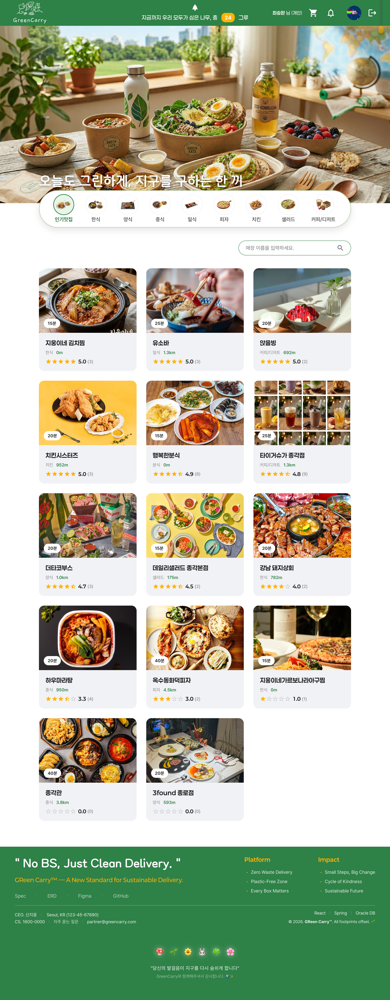
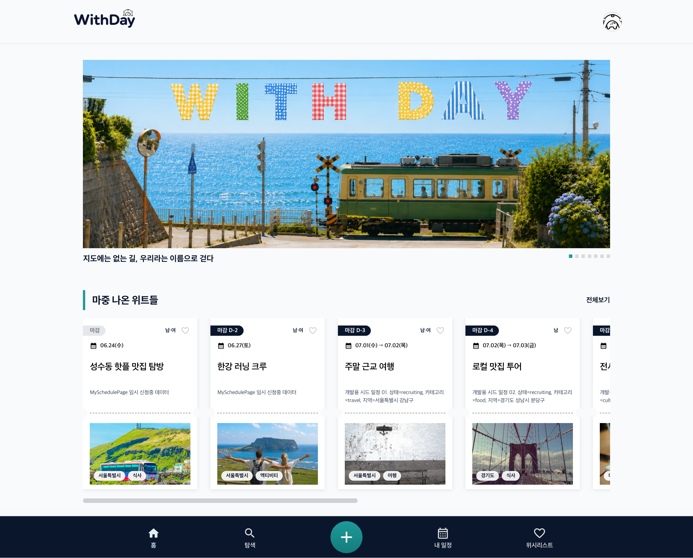

Backend Developer
신지웅
잘 되는 경우보다 실패하는 경우를 먼저 생각합니다.
정상 흐름보다 실패 흐름을 먼저 그립니다. 데이터가 어긋날 수 있는 지점을 찾고, 그걸 막는 구조를 먼저 잡습니다. Spring Boot 기반 백엔드를 중심으로 설계, 구현, 배포까지 직접 경험했습니다.
Core Stack
About Me
저는 Java와 Spring Boot를 중심으로 백엔드 개발을 공부해온 신입 개발자입니다. 고등학교 때부터 개발을 접했고, 대학교와 프로젝트 경험을 통해 웹/앱 개발, 데이터베이스 설계, API 구현, 배포 과정을 경험했습니다. 단순히 기능을 구현하는 것에서 끝나지 않고, 데이터가 어떤 흐름으로 생성되고 전달되며 화면에 반영되는지 추적하는 것을 중요하게 생각합니다.
학력/교육
- 연성대학교 컴퓨터소프트웨어과 졸업
- 한세사이버보안고등학교 게임과 졸업
- KH정보교육원 AWS 풀스택 웹 개발자 양성과정 수료
자격증
- 컴퓨터그래픽스운용기능사
- 프로그래밍기능사
- ITQ 한글파워포인트 A등급
- ITQ 한글엑셀 A등급
- 운전면허증 2종 보통
데이터 흐름을 추적하는 문제 해결력
API 요청, DB 데이터, 화면 반영 과정을 단계별로 확인하며 문제
원인을 좁혀갑니다.
GreenCarry에서는 매장 영업시간과 휴무일
데이터가 주문 가능 시간에 정확히 반영되도록 등록·수정 로직을
구현했습니다.
기획부터 배포까지 연결하는 서비스 이해도
기능 단위 구현에만 머무르지 않고, DB 설계부터 API 구현, 화면
연동, 배포 흐름까지 함께 고려합니다.
WithDay에서는 일정 탐색, 참여 신청, 위시리스트
상태가 서버 데이터와 어긋나지 않도록 API 연동 흐름을
정리했습니다.
협업과 사용자 흐름을 고려한 개발 태도
팀 프로젝트에서 팀장 역할을 맡으며 기능 구현뿐 아니라 역할 분담,
일정 관리, 사용자 흐름 개선을 함께 조율했습니다.
WithDay에서는 모바일 환경에서도 일정 카드와
탐색 화면이 깨지지 않도록 반응형 UI를 정리했습니다.
Tech Stack
실제 프로젝트에서 중심적으로 사용한 기술과 연동·배포 과정에서 경험한 기술을 구분해 정리했습니다.
Backend 주력
REST API 구현, 인증/인가, 서비스 로직 분리, DB 연동을 중심으로 사용했습니다.
Database 주력
테이블 설계, 관계 설정, 조건 기반 조회, 프로젝트 데이터 흐름 설계에 사용했습니다.
Frontend 프로젝트 경험
서버 API 연동, 화면 상태 관리, 반응형 UI 구현 과정에서 사용했습니다.
Infra / Deploy 배포 경험
프론트엔드 정적 배포, 백엔드 서버 배포, DB 연결, Docker 실행 환경 구성 경험이 있습니다.
DevOps / Collaboration 사용 경험
팀 프로젝트 협업, 브랜치 관리, 프론트엔드 자동 배포 흐름 구성에 사용했습니다.
Additional Experience 경험 있음
프로젝트 요구사항에 따라 알림, 이미지 업로드, 결제, 배포 환경을 연동해본 경험이 있습니다.
Projects

GreenCarry
다회용기 사용과 친환경 배달 방식을 중심으로 설계한 음식 주문 플랫폼입니다.
주요 기능
- 주변 매장 조회, 카테고리 필터, 매장명 검색
- 현재 위치 기반 거리 계산 및 예상 소요 시간 표시
- 메뉴 옵션/다회용기 선택 및 장바구니 기능
- 배달 방식별 배달비·탄소 절감량 계산
- Toss Payments 기반 주문/결제 흐름
- 주문 상태 타임라인, 주문 취소, 주문 내역 조회
- 리뷰 작성/삭제 및 점주 리뷰 답글 기능
- 점주 매장·메뉴·주문 상태 관리
- 관리자 회원·매장·리뷰·문의·다회용기·통계 관리
- SSE 기반 실시간 알림 수신
담당 역할
- 팀장으로 프로젝트 기획, DB 설계, 백엔드 API 구현 흐름을 주도했습니다.
- 매장 영업시간과 휴무일 데이터가 주문 가능 시간에 정확히 반영되도록 등록·수정 로직을 설계하고 구현했습니다.
- 관리자 기능에서 회원, 매장, 리뷰, 문의, 다회용기 데이터를 안정적으로 조회·관리할 수 있도록 API와 화면 연동 구조를 정리했습니다.
- 프론트엔드와 백엔드가 분리된 구조에서 API 응답 형식과 데이터 흐름을 맞추며 배포까지 연결했습니다.

WithDay
여행, 식사, 문화생활 등 다양한 일정을 만들고 함께할 사람을 모집할 수 있는 일정 동행 플랫폼입니다.
주요 기능
- 다양한 조건 기반 일정 탐색 및 일정 생성/관리
- 일정 참여 신청 및 취소
- 호스트의 참여 신청 승인/거절 관리
- 참여중, 신청중, 호스팅 일정 탭 구분 관리
- 사용자 맞춤형 추천 일정 제공
- 관심 일정 저장을 위한 위시리스트 기능
- OneSignal 기반 브라우저 푸시 알림
- 모바일 환경을 고려한 반응형 일정 카드 및 화면 구성
담당 역할
- 팀장으로 홈 화면, 일정 탐색, 내 일정, 위시리스트의 주요 사용자 흐름을 설계하고 구현했습니다.
- 일정 카드에 지역, 날짜, 모집 상태, 인원, 금액 정보가 일관되게 표시되도록 데이터 구조와 UI 표시 기준을 정리했습니다.
- 일정 참여 신청·취소, 참여중·신청중·호스팅 탭을 서버 데이터 기준으로 분리해 사용자가 현재 상태를 명확히 확인할 수 있도록 구현했습니다.
- 위시리스트 추가·삭제 후 화면 상태와 서버 데이터가 어긋나지 않도록 API 연동과 상태 동기화 흐름을 개선했습니다.
- 모바일 환경에서도 일정 카드와 탐색 화면이 깨지지 않도록 반응형 UI를 정리하고, GitHub Actions 기반 프론트엔드 배포 흐름을 구성했습니다.
Contact
Let's Connect
포트폴리오를 끝까지 봐주셔서 감사합니다.
새로운 기회와 소통을
언제나 환영합니다!